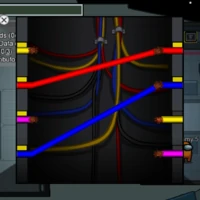

NEW GAME ON THE BLOCK - AMONG US!!!
October 1, 2020 by Christopher Martin
Among Us is a new game available on PC and mobile. It supports crossplay, so you can play with up
to 9 other friends regardless of the device! The concept of the game is similar to that of the
old school game that we all loved, Mafia. There are two teams: The Imposters (consistes of 2
players) and Crewmates (consists of 8 players).
The objective of the crewmates, is to complete a number of tasks around the map while trying to
figure out who the imposters are. On the other hand, the objective of the Imposters is to try
and kill the crewmates before they complete all their tasks, while keeping their identity a
secret. There's a bit more to it, but you'll get the hang of things with experience. I highly
recommend this game if you have a large group of friends to play with!
TIP ON HOW TO CATCH AN IMPOSTER IN AMONG US
October 2, 2020 by Christopher Martin

Imposters usually pretend to do tasks around the crewmates to try and trick them into believing
that they are not an imposter. They do this by standing still in the spot where the task needs
to be completed. However, there are two common tasks that you can pay close attention to, in
order to figure out if they are an imposter or not. The two tasks are admin card swipe and
wiring.
Common tasks are tasks that either all the crewmates have, or none of the crewmates have.
Therefore, if you are a crewmate and you do not have admin card swipe for example, no other
crewate has that task. So if you see someone standing by the card swipe machine while you do not
have that task, you will be able to instantly tell that it is an imposter trying to fake the
task! The same applies to wires. You will have the advantage and look like a great detective
with this one! So make sure to try this in your next few games.